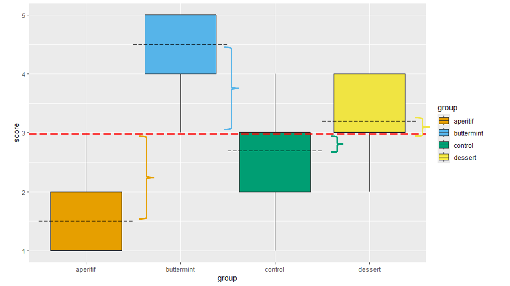
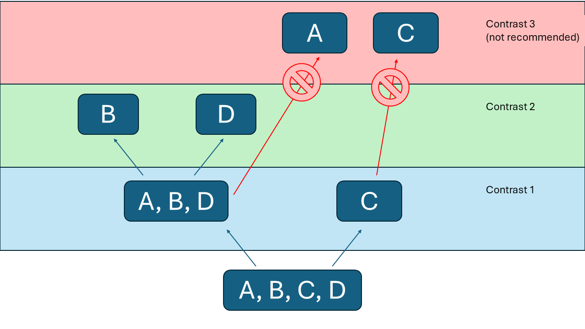
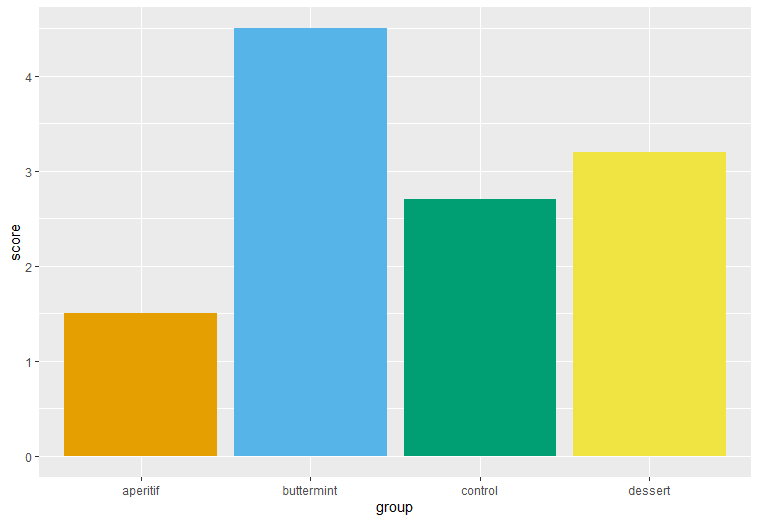

8 Between-Subject ANOVA
8.1 Learning Objectives
Know what an ANOVA is, and what kinds of research questions it can address.
Know what aspects of the data influence the size and significance of an ANOVA.
The difference between a contrast and a post-hoc test, and what they tell you about your data.
How to write the results of an ANOVA and its related contrast/post-hoc test.
Much of the time, we’re going to end up with a more complex design in our research where we need to test the differences between 3 or more groups. For example, imagine we were curious about what makes someone feel “satisfied” after a meal, and we establish four groups: A Control group who receives nothing after their meal; a Dessert group who receive a slice of pie after their meal; an Aperitif group, who receive a cocktail after dinner, and a Buttermint group who get a small butter mint after their meal. The simulated data for this study can be found here.
Now, we certainly could simply do 6 separate t-tests between pairs of groups (A/B; A/C; A/D; B/C; B/D; C/D). But one problem we run into here is what we call familywise error. When we do multiple tests, we compound the likelihood of finding a Type I error. Specifically, if we do three t-tests, our likelihood of a Type I error is:
\(\text{Familywise Error}=1-(1-\alpha_p)^c\)
Where \(\alpha_p\) is the alpha level set for each comparison, and c is the number of comparisons you’re making. So, if we set each t-test at the normal \(\alpha=.05\) for four comparisons, suddenly our error rate has ballooned to a 14% chance of a Type I error. Not acceptable!
So, if we want to hold our error rate steady at .05 total, we have two options.
The first is to do what we call a Bonferroni correction. Here, we simply reset our alpha level for each test to a value that will ensure the total error rate remains at 5%. The Bonferroni correction is pretty straightforward:
\[\frac{\alpha}{number of comparisons}=\alpha_p \tag{8.1}\]
For my example:
\(\frac{.05}{6}=.008\bar3\)
Sure enough, if you plug that value into the familywise error equation above, you’ll see the overall error rate is about .05, just where we would want it.
The other option we have at our disposal is the analysis of variance, or the ANOVA. An ANOVA is useful because it’s what we call an omnibus test; it tests across all groups for detectable differences without identifying exactly where those differences are. If our ANOVA is not significant, then we are done with our test and we can conclude that there are no differences among groups. If we get a significant result, we typically need to do more investigation, through either a contrast or a post-hoc test, to determine where the differences lie.
Bonferroni corrections come in very handy because sometimes you might need to do multiple tests. But for this example, most of the time, researchers would use an ANOVA to examine differences among groups.
8.2 Between-Subject ANOVA
The between-subject ANOVA is analogous to the independent t-test; that is, we have 3 or more groups that experience different conditions, and we see if their mean scores differ from the other groups.
At a theoretical level, it shares a lot with the math for an independent t-test. Once again, we are comparing the amount of differences we see between groups to the amount of variance we see within groups. Just like before, this is a ratio of differences we can explain with our research to differences we can’t explain with our research.
So, let’s use my example research question and a simulated data set to explore how the equation works to answer our questions.
| Scores from the Control Group | Scores from the Dessert Group | Scores from the Aperitif Group | Scores from the Buttermint Group |
| 1 | 2 | 1 | 4 |
| 2 | 3 | 1 | 3 |
| 3 | 4 | 1 | 4 |
| 3 | 3 | 2 | 5 |
| 4 | 4 | 1 | 5 |
| 3 | 3 | 2 | 5 |
| 4 | 2 | 3 | 4 |
| 3 | 3 | 2 | 5 |
| 2 | 4 | 1 | 5 |
| 2 | 4 | 1 | 5 |
| Means for each group: | |||
| 2.7 | 3.2 | 1.5 | 4.5 |
| SD for each group: | |||
| 0.948683 | 0.788811 | 0.707107 | 0.707107 |
Let’s talk through what an ANOVA is conceptually before tackling the equations. Below, you can see a boxplot of the data we have. You can see black dashed lines on each box, which indicates each group mean. You can also see a thicker red line that goes all the way across the graph; that is the grand mean, which is the average of all participants lumped together.

If we were to take each data point and compare it to the grand mean, that represents all the variance in the data set. Once we know how much variance there is overall, we can start to partial the variance – we start splitting up that variance into differences we can explain and differences we can’t explain. In my study, I am hoping that the different after dinner treat affects satisfaction with a meal, so I’m hoping that the means of each group are different. Figure 8.1 also has some colored brackets that highlight the gap between each group mean and the grand mean. These differences – the differences between groups – is what I am actually interested in this data. Arguably, these differences are explained by the condition.
However, even within groups, we see there’s some variation. If we take a look at how each person differs from their group’s mean (highlighted by the brackets in Figure 8.2) , that is variance we can’t explain. People within each group are different, and we have no idea why! But that’s the nature of social science.
So, we now have split our total variance into the two parts we need:
Differences between groups, which are differences we believe can be explained by our predictor.
Differences within groups, which are differences we can’t explain because people are random.
Ultimately, with an ANOVA, we are hoping that the proportion of variance we can explain is larger than the variance we can’t explain. Now that we’ve established this conceptual basis, let’s look at the math that is going on behind these concepts. Here’s the equation for sum of squares total, which is all the variance in our data:
\(SS_{Total}=\sum^{N}_{i=1}(x_i-\bar{{x}}_{grand})^2\)
Let’s take this piece by piece. Just as I mentioned earlier, we want to take each individual score, and subtract the grand mean from it. We need to square that value (otherwise, it would just be zero). We start with our first subject, and we keep doing this until we have added up values from every participant in our data set.
Next, we want to establish the variance we can explain based on group membership, which is the sum of squares model:
\(SS_{Model}=\sum^{k}_{g=1}n_g(x_g-\bar{{x}}_{grand})^2\)
For this equation, we take each group mean, subtract the grand mean from it, square it (because again, if we don’t it would just be zero). We then multiply that value by the number of people in each group (mathematically, we are basically acting as though everyone in each group got the group mean, and we’re summing that up). We do this starting with the first group, and we keep going until we’ve added these numbers for all groups.
The final equation establishes how much variance exists within each group, which we might call the sum of squares residual. The formula is a little more gnarly:
\(SS_{Resid.}=\sum^{k}_{g=1}\sum^{n}_{i=1}(x_{ig}-\bar{{x}}_{g})^2\)
Essentially, here we are taking each individuals score and subtracting their group mean. We square it, and sum it up. We do this for each person within each group. The good news here is that as you’ve learned, “residual” just means “leftover stuff.” So, another way we can get this is:
\(SS_{Resid.}=SS_{Total}-SS_{Model}\)
Again, \(SS_T\) is all the variance in our data, and \(SS_M\) is the variance we can explain based on group membership. The only variance left over is variance not explained by group membership!
I’ll spare you the calculations here, but if you wanted to do this by hand, you’d get the following results:
\(SS_{Total}=68.98\)
\(SS_{Model}=22.70\)
\(SS_{Resid.}=68.98-22.70=46.28\)
One issue with sum of squares is that their magnitude is based on the number of people or the number of groups. So, we need to account for that to make these proportions comparable. Normally, we could just do this by dividing by the number of groups or the number of people in each group. But these estimates are slightly smaller in the sample compared to the population we want to extrapolate our results to, so we have to subtract 1 from the number of groups or the number of people to account for that bias. Good news, degrees of freedom are right there with that adjustment you need! The degrees of freedom for \(SS_T\) is the number of total participants minus 1, the degrees of freedom for \(SS_M\) is the number of groups minus 1, and the \(SS_R\) is the difference between the two:
\(df_T=N-1=40-1=39\)
\(df_M=k-1=4-1=3\)
\(df_R=df_T-dfM=36\)
We can now divide the sums of squares by their related degrees of freedom to get what we call mean squares. We don’t really need to worry about this for the total, we only need it for the model and residual.
\(MS_M=\frac{46.28}{3}=15.43\)
\(MS_R=\frac{22.70}{36}=.63\)
Finally, we obtain the ratio of what we know, \(MS_M\) , to what we don’t know, \(MS_R\).
\(F=\frac{15.43}{63}=24.46\)
The critical F value for an ANOVA with 3 and 36 degrees of freedom is 2.87 (see Table 15.3), so we can be reasonably confident there are true differences among the groups. Remember that our conclusion is quite limited, though. The significant F-test indicates that at least one group is different from at least one other group. So, because this finding is signficiant, we need to do more investigation. If it’s not significant, we’re done and we can conclude that our data suggests no differences among the groups.
8.3 Contrasts
In some cases, we may only be interested in particular comparisons among our groups. For example, let’s say that I have two differences I’m particularly interested in. First, I want to know if the control group is different from the 3 other groups. Second, I want to know if there’s a difference between food-related after dinner treats (Dessert versus Buttermint). Third, I want to know if the Control group is different from the Aperitif group. If these are my questions, there are a lot of comparisons I don’t need to do (for example, I’m not interested in whether an aperitif is different from a buttermint, so I don’t need to do that test).
In those cases, we can preserve power by doing a contrast – that is, we select specific comparisons we want to investigate and test only those comparisons.
In most software programs, setting up contrasts can be a little fiddly, as it requires some dummy coding. Essentially, when setting up a contrast, you need to follow three basic rules:
Groups that you want to keep together need to share the same number. If you want to ignore a group, give it a 0.
The sum of all your codes should equal 0
Once you separate a group out, you can’t put it back together with other groups.
This takes a little bit of practice, but once you get your head around these rules, it’s not too difficult. Let’s take the two contrasts I set up, and walk through them as an example.
The first contrast I want to compare Control to Aperitif, Buttermint, and Dessert. So, I need to give Control a number, and Aperitif/Buttermint/Dessert a different number. Because I am comparing 3 groups to 1 group, I need to think about how I might ensure I end up with a sum of zero. Here’s one possible solution:
| Group | Contrast 1 Code |
|---|---|
| Aperitif | 1 |
| Buttermint | 1 |
| Control | -3 |
| Dessert | 1 |
| Sum: | 0 |
We’ve met all three rules. The Control group has a different value than the other groups, and the values sum to zero. The third rule is moot in this case because it’s my first contrast, so this is the first time I am separating out a group. Now let’s move to my next contrast, where I want to examine whether Dessert or Buttermints are better for satisfying someone after a meal. Here’s how I might set that up:
| Group | Contrast 2 Code |
|---|---|
| Aperitif | 0 |
| Buttermint | 1 |
| Contrast | 0 |
| Dessert | -1 |
| Sum: | 0 |
Again, I’ve met all three rules. Buttermint and Dessert have different values, and they sum to zero. Because I separated out the Contrast group earlier, I can’t add it back into this model. Looks good!
However, when I try to turn my attention to the final contrast, Control group versus Aperitif group, I run into a problem– I’m violating the third rule. Because I separated the Contrast group out before, it doesn’t make sense to compare it to Aperetif… we sort of already did that. So, sometimes you might need to think through your comparisons or draw them out.

Think of it like a tree– the branches should spread out; they shouldn’t reconnect after they’ve split apart. If you do find that you need to make some of those types of comparisons, it might be better to do a post-hoc test, which we’ll discuss in the next section.
When I conduct the first two contrasts, I see they are significant. In other words, I find that my Control group is significantly less satisfied than the other groups. I also find that the Dessert group is more satisfied than the Buttermint group. And I’m done!
8.4 Post-Hoc Tests
Sometimes we don’t need to be quite so precise in our comparisons. Maybe we just want to know which after dinner treat is the most satisfying, and we’d like to see the comparison among all groups rather than selected groups. In that case, the better tool is the post-hoc test. There are a ton of different post-hoc tests out there. Some are a bit outdated and were more useful when we didn’t have statistical software to do the calculation for us. Some might be more conservative and others might be more liberal. If you would like a rundown of most post-hoc tests, you can check out (Toothaker 1993) for an overview.
In general, I tend to use the following post-hoc tests:
I use the Bonferroni post-hoc when I want to be conservative about Type I errors.
If the sample sizes are very different in each group, I use the Hochberg’s GT2
If I see big differences in variance in my groups, or if I believe the variance in the two populations is different, I use the Games-Howell procedure.
If my group sizes are roughly equal and don’t demonstrate heteroscedasticity, I use the REGWQ (Ryan’s procedure).
In the example, my groups are perfectly balanced with 10 participants each, and I don’t see much heteroscedasticity, so in this case a REGWQ is what I’d most likely use.
I usually suggest that students not get too hung up on which post-hoc test to use; most of the time it won’t make a huge difference. The one thing that you should not do is run all the post-hoc tests and choose the one that gives you the results you want. That is taking advantage of chance, which we try not to do in statistics.
In this case, all my recommended post-hoc tests indicate the same outcome– the Control group is significantly lower than all other groups, and the Dessert group is significantly higher than all groups. Buttermint and Aperitif are not significantly different from one another.
8.4.1 What to do if your assumption of normality and/or homoscedasticity are violated
Much like with t-tests, ANOVA tests are relatively robust against violations of assumptions. And much like t-tests, problems with this can often be addressed using the Welch test. The Welch test adjusts the degrees of freedom and how variances are pooled, so if you do use the Welch test, you’ll want to note that you did so, and you can expect to report some decimals in your degrees of freedom.
8.4.2 Calculating an Effect Size for Between-Subject T-Tests
The most common estimates of effect size are \(\eta^2\) and \(\hat{\omega}^2\) . In general, \(\hat{\omega}^2\) is slightly more complex but also more accurate. Here’s the equation:
\(\hat{\omega}^2=\frac{SS_M-(df_M)MS_R}{SS_T+MS_R}\)
Basically, this is the proportion of variance explained by the model over the total variance, with an adjustment to address the fact that we’re trying to translate results from a sample to a population. In the case of our data, \(\hat{\omega}^2=.64\), so a very substantial proportion of differences among participants can be attributed to the condition they were in.
8.4.3 Writing the Results of a Between-Subject ANOVA
When sharing the results of a between-subject ANOVA, you want to convey several pieces of information to your audience:
What type of ANOVA you are doing;
What the average scores are for each group and their accompanying standard deviations;
The F-test value, its degrees of freedom, and its significance;
In some cases, the effect size
If you used a Welch correction, you should indicate that.
If you find a significant omnibus test, you should conduct a contrast or post-hoc test and explain your results. Depending on the software you use and which post-hoc you choose, you may not have access to t-test results for the individual post-hoc tests. Provide as much information as you can, with the p-value being the bare minimum.
So, for this example, here’s an example of how I might write up the results if I did contrasts:
To test the hypothesis, I conducted a one-way, between-subjects ANOVA with planned contrasts. The ANOVA was signficant, F(3, 36)=24.46, p<.001. The first contrast, which compared the control group to the other groups, found that the control group was significantly lower than the other groups in terms of satisfaction, t(36)=6.78, p<.001. The second contrast, which examined whether there was a difference between participants who had a buttermint from those who had dessert, found that people who had dessert were significantly more satisfied, t(36)=3.66, p<.001
Alternatively, for a post-hoc, there can often be a lot of comparisons, so writing this efficiently helps streamline information for your reader. For my example, most differences are significant, so I most likely would call attention to the comparison that was not significant. You’ll want to adjust your approach based on your findings, but in scientific writing we try to be thorough but brief:
To test the hypothesis, I conducted a one-way, between-subjects ANOVA. The ANOVA was significant, F(3, 36)=24.46, p<.001. A Tukey’s post-hoc indicated all groups were significantly different at p<.05, with the exception of the aperitif and buttermint groups, which were not different, p=.50.
A table or graph is also helpful for conveying group means:
